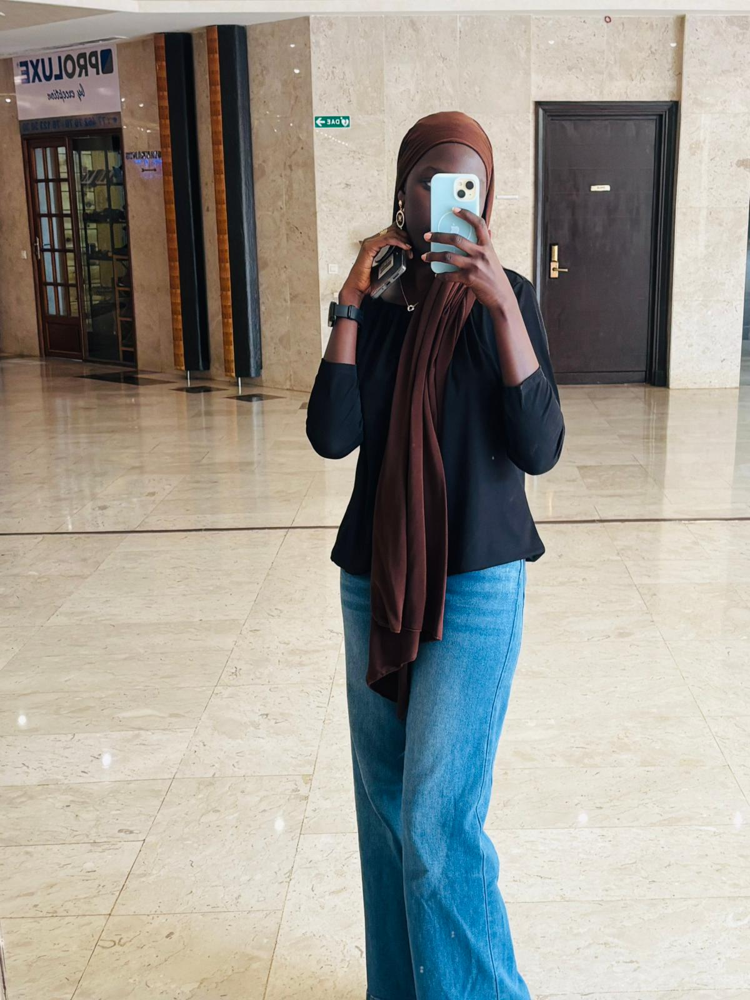

Faisons connaissance

Qui suis-je ?
Passionnée par la programmation et l'analyse de données, je suis actuellement en Licence 1 à l'Université Rose Dieng France Senegal. J'aime résoudre des problèmes concrets à travers le code, tout en gardant du temps pour mes passions créatives comme le dessin et le tricot.
Début de mon parcours scientifique, où j'ai découvert mon goût pour la logique et la résolution de problèmes.
Obtention du Bac S2, confirmant mon attirance pour les mathématiques et les sciences.
Étudiante à l'Université Rose Dieng , où j'explore la programmation, les bases de données et le machine learning.
J'aime les intrigues qui demandent de la réflexion et de l'analyse, un peu comme en programmation.
Une activité manuelle qui demande patience et précision, parfaite pour me détendre.
Une autre forme de créativité, où je peux exprimer mes idées visuellement.
Créer des objets de mes propres mains, du concept à la réalisation.
Je suis encore au début de mon parcours et je reste ouverte à plusieurs voies : la Data Science, le développement web, ou d'autres domaines liés à l'intelligence artificielle. Mon objectif actuel est de construire des bases solides en programmation, en mathématiques et en analyse de données, pour ensuite choisir la spécialisation qui me correspond le mieux.